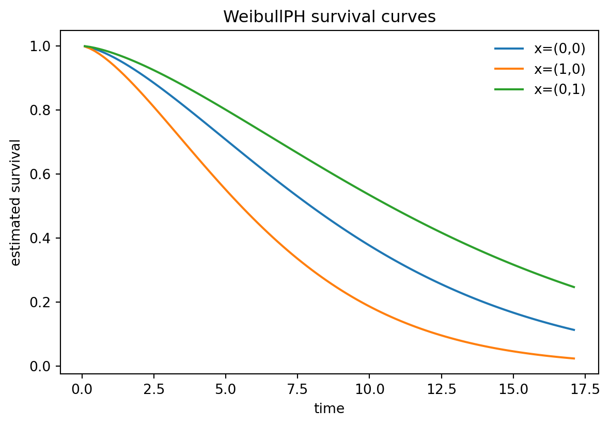

import numpy as np
import pandas as pd
import matplotlib.pyplot as plt
import crabbymetrics as cm
np.set_printoptions(precision=4, suppress=True)Survival, Time-to-Event, and Recurrent-Event Models
Prediction surfaces and modeling choices across ExponentialPH, WeibullPH, CoxPH, and Andersen–Gill
This vignette is the richer worked companion to the class reference pages for the survival submodule.
Four estimators, two prediction philosophies
crabbymetrics currently exposes four event-time estimators:
ExponentialPH: parametric PH with constant baseline hazard,WeibullPH: parametric PH with monotone baseline hazard,CoxPH: semiparametric proportional hazards,AndersenGill: counting-process Cox for recurrent events or split intervals.
The prediction contract differs for a principled reason.
- The parametric PH models identify the baseline hazard, so they can return hazard, cumulative hazard, and survival.
- The Cox-style models leave the baseline hazard unspecified, so the paved prediction object is relative risk.
Simulate a Weibull PH design
rng = np.random.default_rng(20260524)
n = 900
beta_true = np.array([0.55, -0.35])
shape_true = 1.45
scale_hazard_true = 0.035
x = rng.normal(size=(n, 2))
u = rng.uniform(size=n)
event_time = ((-np.log(u)) / (scale_hazard_true * np.exp(x @ beta_true))) ** (1 / shape_true)
censor_time = rng.exponential(35, size=n)
time = np.minimum(event_time, censor_time)
event = (event_time <= censor_time).astype(float)
print({"events": int(event.sum()), "censor_rate": float(1 - event.mean())}){'events': 682, 'censor_rate': 0.24222222222222223}Fit the parametric PH models
exp_ph = cm.ExponentialPH()
exp_ph.fit(x, time, event)
weibull = cm.WeibullPH()
weibull.fit(x, time, event)
print(
"ExponentialPH diagnostics:",
{key: exp_ph.summary()[key] for key in ["converged", "iterations", "termination_reason", "objective"]},
)
print(
"WeibullPH diagnostics:",
{key: weibull.summary()[key] for key in ["converged", "iterations", "termination_reason", "objective"]},
)
pd.DataFrame(
{
"truth": beta_true,
"ExponentialPH": exp_ph.summary()["coef"],
"WeibullPH": weibull.summary()["coef"],
"Weibull hazard ratio": weibull.summary()["hazard_ratio"],
},
index=["x1", "x2"],
)ExponentialPH diagnostics: {'converged': True, 'iterations': 4, 'termination_reason': 'Relative objective tolerance reached', 'objective': 2214.156262319114}
WeibullPH diagnostics: {'converged': True, 'iterations': 5, 'termination_reason': 'Relative objective tolerance reached', 'objective': 2138.0179181398394}| truth | ExponentialPH | WeibullPH | Weibull hazard ratio | |
|---|---|---|---|---|
| x1 | 0.55 | 0.373986 | 0.543250 | 1.721594 |
| x2 | -0.35 | -0.306631 | -0.443975 | 0.641481 |
Parametric prediction surfaces
check_x = x[:5]
check_t = np.linspace(2.0, 12.0, 5)
exp_preds = pd.DataFrame(
{
"time": check_t,
"lin": exp_ph.predict_lin(check_x),
"hazard": exp_ph.predict_hazard(check_x),
"cumhaz": exp_ph.predict_cumulative_hazard(check_x, check_t),
"survival": exp_ph.predict(check_x, check_t),
}
)
exp_preds| time | lin | hazard | cumhaz | survival | |
|---|---|---|---|---|---|
| 0 | 2.0 | -2.523673 | 0.080165 | 0.160329 | 0.851863 |
| 1 | 4.5 | -1.541413 | 0.214078 | 0.963352 | 0.381611 |
| 2 | 7.0 | -2.573994 | 0.076230 | 0.533613 | 0.586482 |
| 3 | 9.5 | -2.344797 | 0.095867 | 0.910733 | 0.402229 |
| 4 | 12.0 | -2.754569 | 0.063636 | 0.763638 | 0.465968 |
weibull_preds = pd.DataFrame(
{
"time": check_t,
"lin": weibull.predict_lin(check_x, check_t),
"hazard": weibull.predict_hazard(check_x, check_t),
"cumhaz": weibull.predict_cumulative_hazard(check_x, check_t),
"survival": weibull.predict_survival(check_x, check_t),
}
)
weibull_preds| time | lin | hazard | cumhaz | survival | |
|---|---|---|---|---|---|
| 0 | 2.0 | -3.060031 | 0.046886 | 0.062667 | 0.939257 |
| 1 | 4.5 | -1.234688 | 0.290926 | 0.874893 | 0.416907 |
| 2 | 7.0 | -2.513302 | 0.081000 | 0.378918 | 0.684602 |
| 3 | 9.5 | -2.027687 | 0.131640 | 0.835738 | 0.433554 |
| 4 | 12.0 | -2.506275 | 0.081572 | 0.654154 | 0.519882 |
The internal identities line up exactly:
{
"exp hazard = exp(lin)": np.allclose(exp_preds["hazard"], np.exp(exp_preds["lin"])),
"exp survival = exp(-cumhaz)": np.allclose(exp_preds["survival"], np.exp(-exp_preds["cumhaz"])),
"weibull hazard = exp(lin)": np.allclose(weibull_preds["hazard"], np.exp(weibull_preds["lin"])),
"weibull survival = exp(-cumhaz)": np.allclose(weibull_preds["survival"], np.exp(-weibull_preds["cumhaz"])),
}{'exp hazard = exp(lin)': True,
'exp survival = exp(-cumhaz)': True,
'weibull hazard = exp(lin)': True,
'weibull survival = exp(-cumhaz)': True}Cox proportional hazards
cox = cm.CoxPH()
cox.fit(x, time, event)
print({key: cox.summary()[key] for key in ["converged", "iterations", "termination_reason", "objective"]})
cox_table = pd.DataFrame(
{
"truth": beta_true,
"coef": cox.summary()["coef"],
"hazard ratio": cox.summary()["hazard_ratio"],
"se": cox.summary()["se"],
},
index=["x1", "x2"],
)
cox_table{'converged': True, 'iterations': 3, 'termination_reason': 'Relative objective tolerance reached', 'objective': 3798.3044744978797}| truth | coef | hazard ratio | se | |
|---|---|---|---|---|
| x1 | 0.55 | 0.540299 | 1.716519 | 0.044353 |
| x2 | -0.35 | -0.440718 | 0.643574 | 0.042970 |
Since the baseline hazard is left unspecified, the default prediction is relative risk rather than absolute survival:
cox_preds = pd.DataFrame(
{
"log_hazard_ratio": cox.predict_lin(check_x),
"relative_risk": cox.predict(check_x),
}
)
cox_preds| log_hazard_ratio | relative_risk | |
|---|---|---|
| 0 | -0.335467 | 0.715004 |
| 1 | 1.077264 | 2.936634 |
| 2 | -0.411353 | 0.662753 |
| 3 | -0.078487 | 0.924514 |
| 4 | -0.669401 | 0.512015 |
Andersen–Gill for recurrent events or split intervals
A convenient smoke test is to split each subject into two rows with the event, if any, carried only by the final interval.
start_long = np.concatenate([np.zeros_like(time), time / 2])
stop_long = np.concatenate([time / 2, time])
x_long = np.vstack([x, x])
event_long = np.concatenate([np.zeros_like(event), event])
ag = cm.AndersenGill()
ag.fit(x_long, start_long, stop_long, event_long)
print({key: ag.summary()[key] for key in ["converged", "iterations", "termination_reason", "objective"]})
pd.DataFrame(
{
"CoxPH": cox.summary()["coef"],
"Andersen-Gill split rows": ag.summary()["coef"],
},
index=["x1", "x2"],
){'converged': True, 'iterations': 3, 'termination_reason': 'Relative objective tolerance reached', 'objective': 3798.3044744978793}| CoxPH | Andersen-Gill split rows | |
|---|---|---|
| x1 | 0.540299 | 0.540299 |
| x2 | -0.440718 | -0.440718 |
ag_preds = pd.DataFrame(
{
"log_hazard_ratio": ag.predict_lin(check_x),
"relative_risk": ag.predict(check_x),
}
)
ag_preds| log_hazard_ratio | relative_risk | |
|---|---|---|
| 0 | -0.335467 | 0.715004 |
| 1 | 1.077264 | 2.936634 |
| 2 | -0.411353 | 0.662753 |
| 3 | -0.078487 | 0.924514 |
| 4 | -0.669401 | 0.512015 |
Visualizing survival curves from the parametric fit
grid = np.linspace(0.1, np.quantile(time, 0.9), 100)
profiles = np.array([
[0.0, 0.0],
[1.0, 0.0],
[0.0, 1.0],
])
labels = ["x=(0,0)", "x=(1,0)", "x=(0,1)"]
fig, ax = plt.subplots(figsize=(7, 4.5))
for profile, label in zip(profiles, labels):
xx = np.tile(profile, (len(grid), 1))
ax.plot(grid, weibull.predict_survival(xx, grid), label=label)
ax.set_xlabel("time")
ax.set_ylabel("estimated survival")
ax.set_title("WeibullPH survival curves")
ax.legend(frameon=False)
plt.show()
Interpretation
The current survival module has a clean split:
- parametric PH models for absolute event-time prediction,
- Cox-style models for semiparametric relative-risk estimation,
- Andersen–Gill when the data are naturally in risk-interval form.
That division is what drives the prediction API. The model returns the richest object it can justify from the fitted likelihood or partial likelihood.